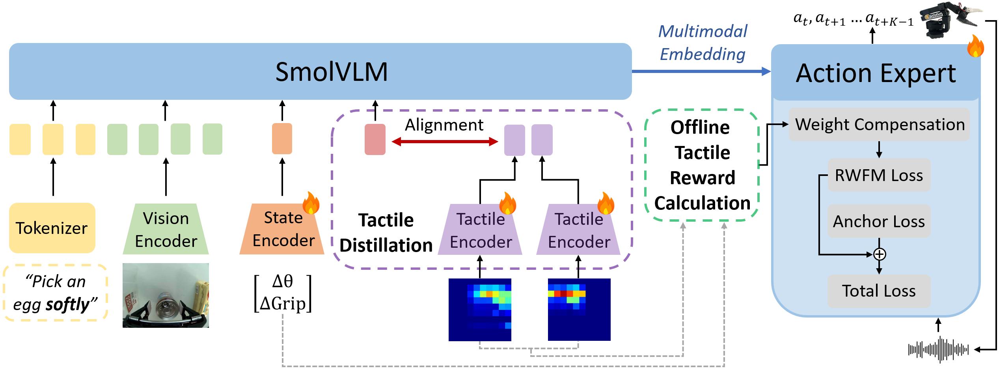
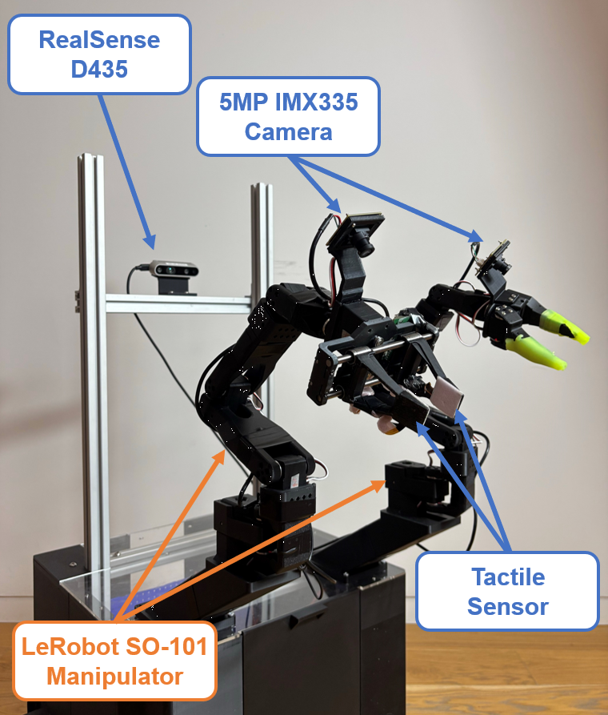
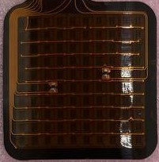
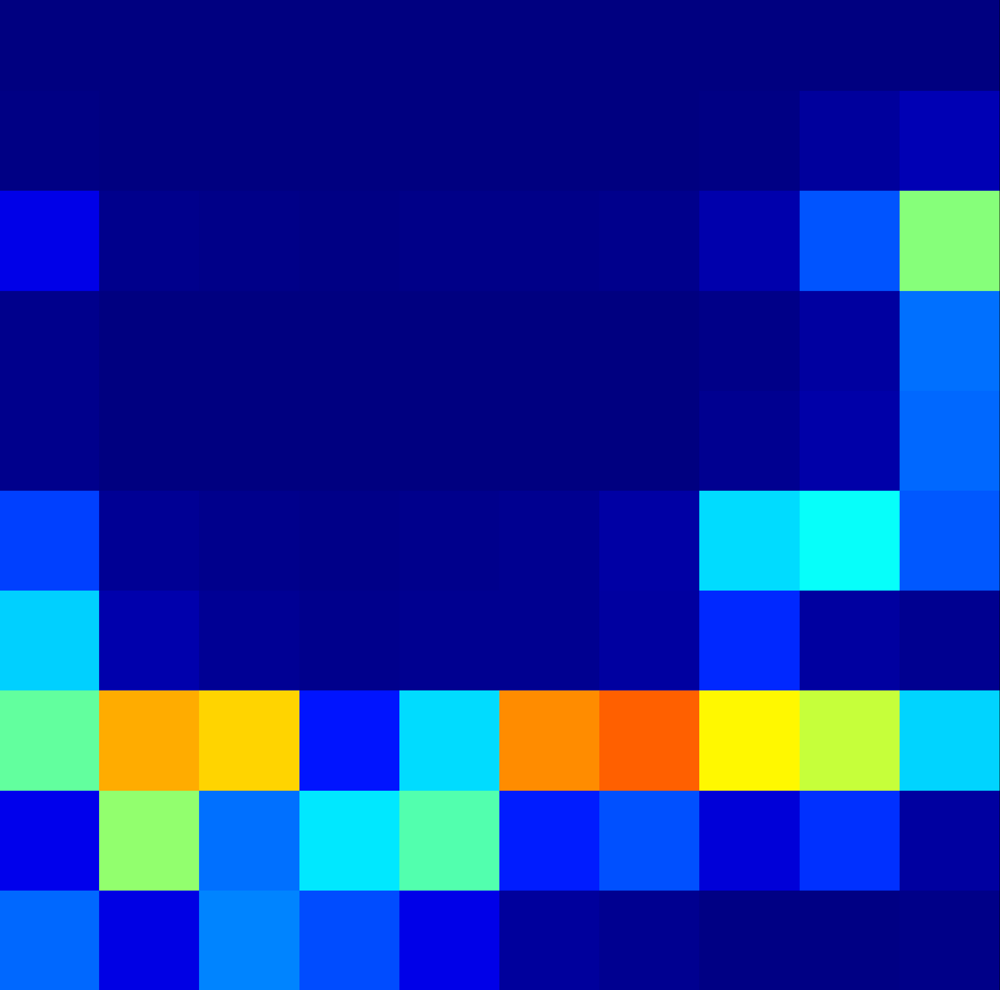

Abstract
IROS submission · under reviewTactile sensing is a crucial capability for Vision-Language-Action architectures, as it enables dexterous and safe manipulation in contact-rich tasks. However, reliance on dedicated tactile hardware increases cost and reduces reproducibility across robotic platforms.
We argue that tactile-aware manipulation can be learned offline and deployed without direct haptic feedback at inference. HapticVLA proceeds in two tightly-coupled stages. Safety-Aware Reward-Weighted Flow Matching (SA-RWFM) trains a flow-matching action expert on precomputed tactile safety rewards that penalize excessive grasping force and suboptimal trajectories. Tactile Distillation then transfers this tactile-aware capability into a standard VLA by distilling a compact tactile token from the SA-RWFM teacher and training a student that predicts it from vision and proprioception alone.
On real-world experiments, HapticVLA achieves a mean success rate of 86.7%, consistently outperforming baseline VLAs — including versions provided with direct tactile feedback during inference.
Method
SA-RWFM + Tactile Distillation
Offline tactile reward
For every episode we summarize left/right tactile maps into per-step safety rewards over force band, peak pressure, pressure concentration, inter-pad asymmetry, and slip detection, then combine with episode outcomes (success, drop, damage, risk).
SA-RWFM teacher
A tactile-aware SmolVLA action expert is fine-tuned with reward-weighted flow matching — exponentiated clipped weights on a mixed episode / chunk advantage, robustly normalized per task, with an L2 anchor to the IL initialization.
Tactile distillation
Teacher rollouts are precomputed once over the dataset. A tactile-free student is initialized from the teacher backbone (tactile encoder dropped, state projection sliced to proprioception) and trained on a 50/50 blend of ground-truth and teacher action chunks.
Hardware
Crab platform · bimanual SO-101
| Arms | 2 × LeRobot SO-101 (6 DoF each). Left 7.4 V · right 12 V for added torque. |
| Gripper | Custom parallel gripper, based on the open-source SO-ARM100/101 design, instrumented with tactile arrays. |
| Tactile | 2 × 10×10 taxels → 200 taxels @ 120 Hz, 1–9 N per taxel. |
| Cameras | Intel RealSense D435 (overhead) + 2 × IMX335 5 MP wrist. All streams 640 × 480 @ 15 FPS. |
| Compute | Inference: Jetson Orin NX 16 GB. Training: RTX 4090 (SA-RWFM) · H100 (distillation). |
| Tasks | Pick-and-place — marmalade jar · waffles · egg carton. |


Results
Real-world rollouts · unedited footageAblation — Tactile Distillation
n = 20 trials · per task| Model | Jar | Waffles | Egg | Mean ↑ |
|---|---|---|---|---|
| w/o TD, async | 16 / 20 | 18 / 20 | 15 / 20 | 81.7% |
| w/o TD | 11 / 20 | 17 / 20 | 17 / 20 | 75.0% |
| w/ TD, async | 14 / 20 | 19 / 20 | 15 / 20 | 80.0% |
| w/ TD Ours | 15 / 20 | 18 / 20 | 19 / 20 | 86.7% |
TD substantially improves contact-rich manipulation performance; combined with SA-RWFM it yields the largest mean success rate. Synchronous chunking consistently outperforms async, which we attribute to temporal misalignment between tactile observations and control actions under async inference.
Code & Weights
open · Apache-2.0- crab-smolvla-hapticsvla student · deployable
- crab-smolvla-rwfm SA-RWFM teacher
- crab-smolvla-right-arm IL baseline
- crab-smolvla-left-arm IL baseline
Citation
preprint · cite the arXiv version@misc{hapticvla2026,
title = {HapticVLA: Contact-Rich Manipulation via Vision-Language-Action
Model without Inference-Time Tactile Sensing},
author = {Gubernatorov, Konstantin and Sannikov, Mikhail and
Mikhalchuk, Ilya and Fernando, Marcelino and Kuznetsov, Egor
and Ogunwoye, Faith Ouwatobi and Asanov, Artem and
Artemov, Makar and Guo, Ziang and Tsetserukou, Dzmitry},
year = {2026},
eprint = {2603.15257},
archivePrefix = {arXiv},
primaryClass = {cs.RO},
url = {https://arxiv.org/abs/2603.15257}
}